Compagnon du Dossier XXXI · Le Son
Les oreilles du Son
Vingt et une fiches, dans l'ordre du récit : ce que chacun a réellement montré, et ce qu'on lui prête à tort.
Pythagore donne le rapport. Mersenne donne l'horloge. Sauveur donne le nom. Rayleigh donne le traité. Langevin compte ce qui revient. Gurnett change d'onde. King Tubby fait de l'écho un instrument.
Pourquoi ces fiches
Une chaîne de gestes, et les légendes qui s'y accrochent
Le dossier suit une onde, un milieu, une oreille. Ces fiches suivent les personnes qui ont fait avancer la question. Chacune tient en deux rubriques : ce qu'il a réellement montré, et, quand il y a lieu, ce qu'on lui prête à tort. La seconde compte autant que la première : le marteau de Pythagore, le « hertz » de Mersenne ou le « son de l'espace » de Voyager circulent plus que les faits.
Trois fiches ouvrent la page, parce qu'elles marquent trois bascules du dossier. Mersenne traite l'écho comme une réflexion et compte les vibrations d'une corde. Langevin mesure le temps que met un écho à revenir. Gurnett écoute un milieu où il n'y a plus d'air, avec une autre onde.
Les faits viennent du texte du dossier et de sa vérification, affirmation par affirmation, dans Les Sources. Les dates et détails biographiques ajoutés ici ont été vérifiés à part. Chaque portrait porte sa licence, relevée sur sa page Wikimedia Commons. Trois personnes n'ont pas d'image : aucun portrait à licence claire n'a été trouvé, et une case vide vaut mieux qu'un crédit douteux. Celui de Hooke est un portrait imaginé, peint en 2004 : aucun portrait d'époque n'a survécu.
Objectif 1
Des gestes précis
Compter, pomper l'air, chronométrer, filtrer, échantillonner : chaque fiche nomme une opération.
Objectif 2
Des dates justes
1636, 1701, 1816, 1917, 1978, 2012 : les dates corrigées par la vérification sont reprises telles quelles.
Objectif 3
Des légendes nommées
Une idée reçue se corrige mieux quand on dit d'où elle vient.
Trois bascules, quatre parties, une coda
- Trois basculesMersenne, Langevin, Gurnett
- Partie ILe lieu et le nombre — Pythagore
- Partie IILe siècle de la mesure — Galilée, Boyle, Hooke, Newton, Sauveur
- Partie IIILe son mis en équations — Laplace, Chladni, Fourier, Helmholtz, Doppler, Rayleigh
- Partie IVLe XXe siècle — Sabine, Békésy, Kemp, Griffin, Shannon
- CodaLe studio comme instrument — Bob Marley et les ingénieurs du dub
Galerie
Vingt et un visages, trois absences
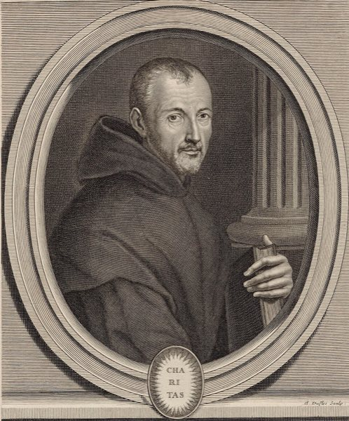
Marin MersenneL'horloge du son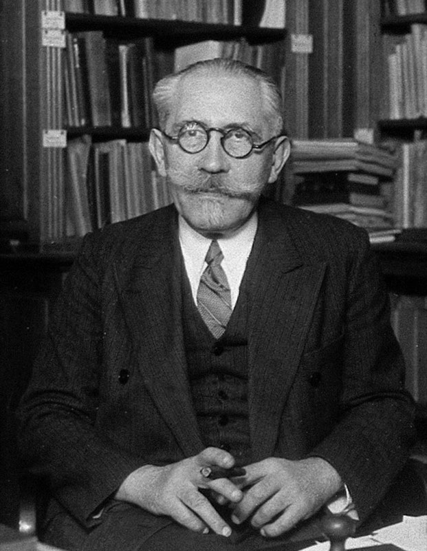
Paul LangevinCompter ce qui revient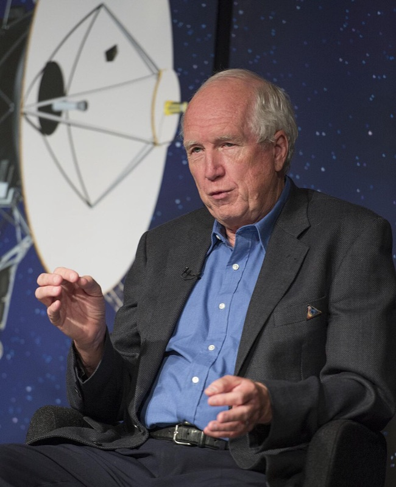
Donald GurnettChanger d'onde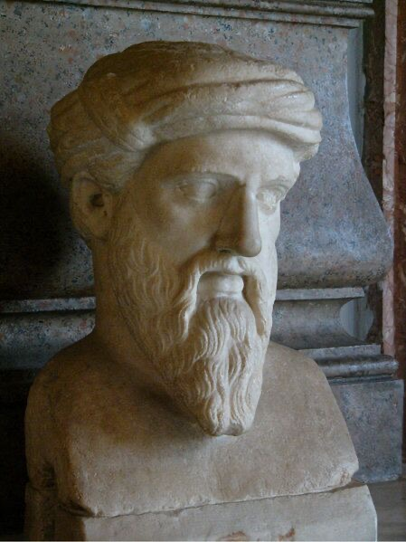
PythagoreLe rapport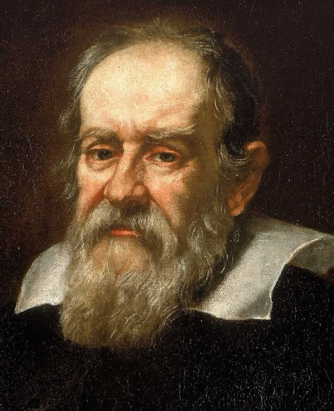
GaliléeLe nombre des vibrations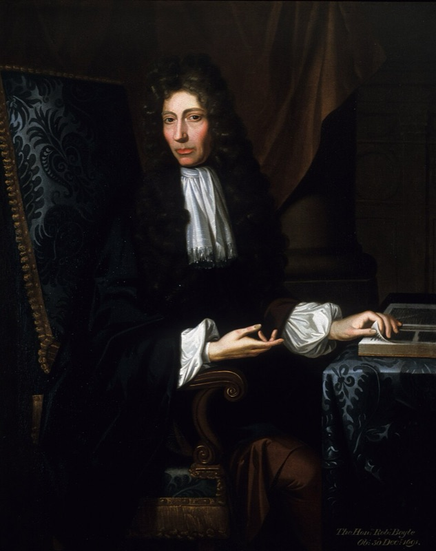
Robert BoyleLe milieu nécessaire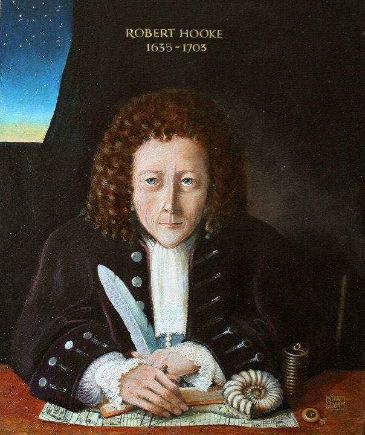
Robert HookeLa roue qui chante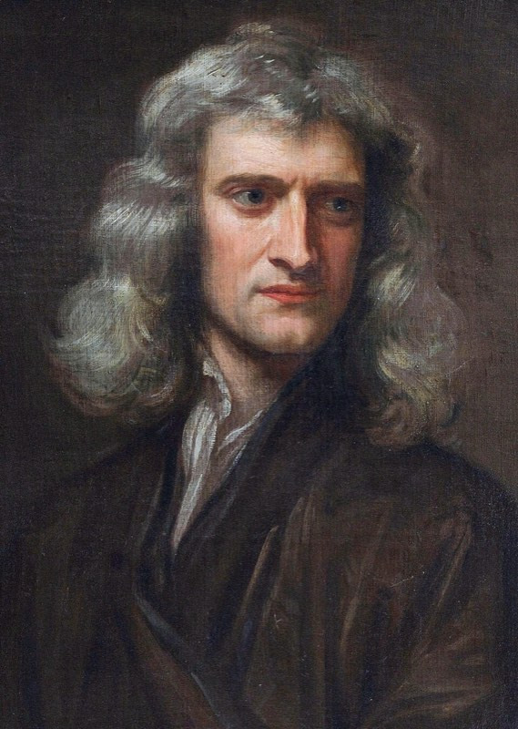
Isaac NewtonLe bon cadre, la mauvaise hypothèse Joseph SauveurLe nom de la discipline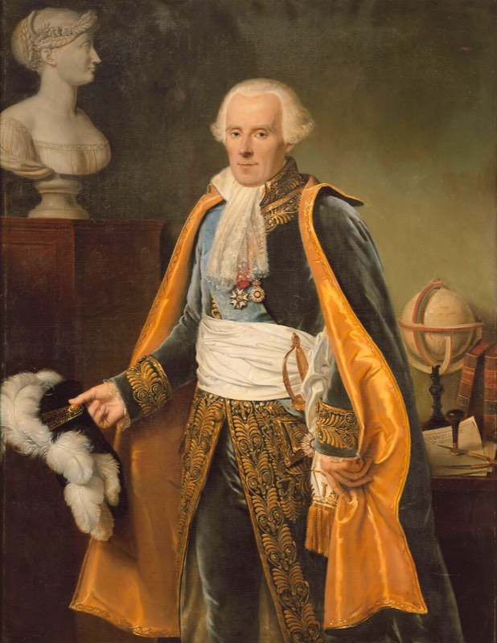
Pierre-Simon de LaplaceLe facteur manquant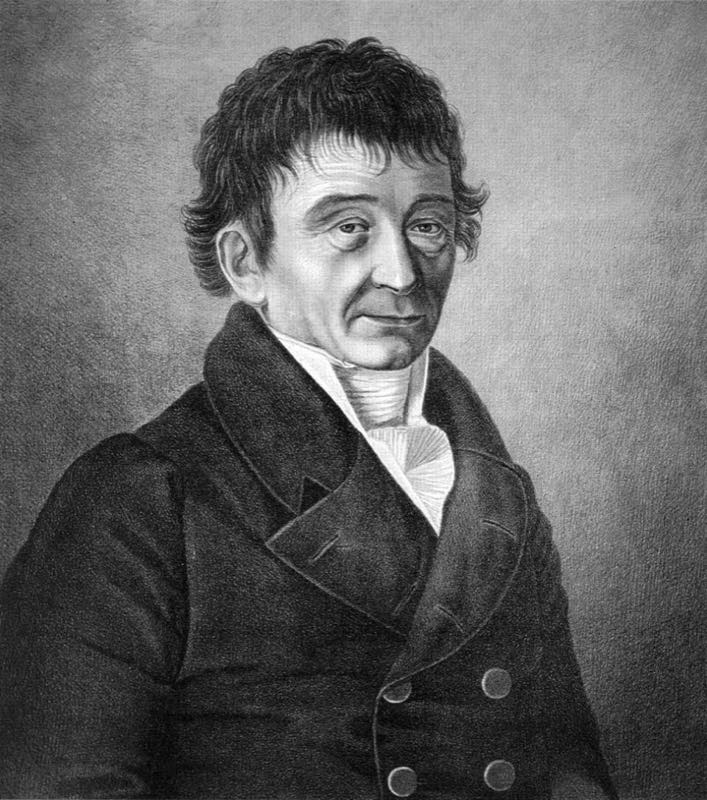
Ernst ChladniLes modes rendus visibles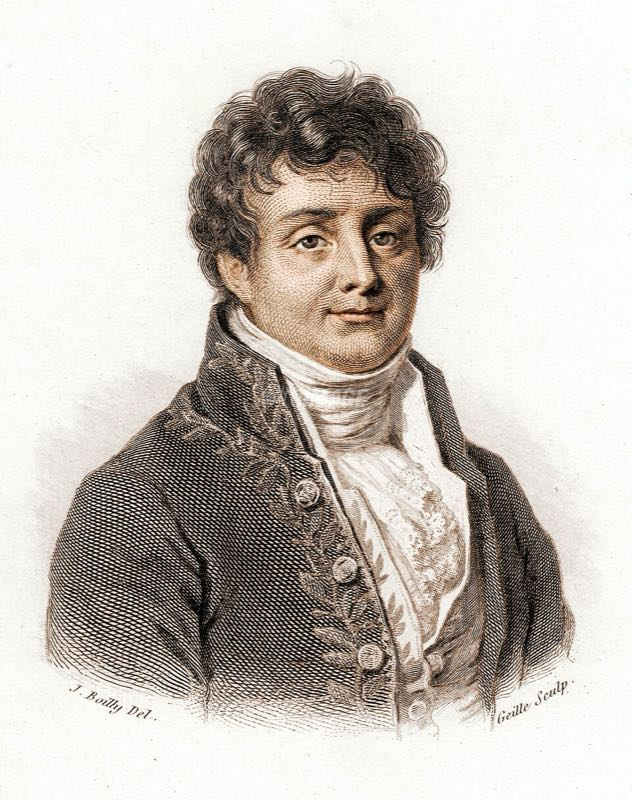
Joseph FourierUne somme de sinus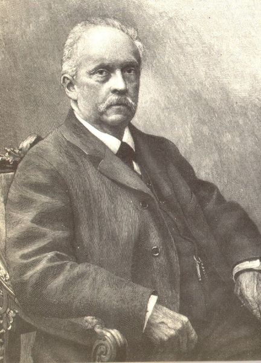
Hermann von HelmholtzLe timbre est un spectre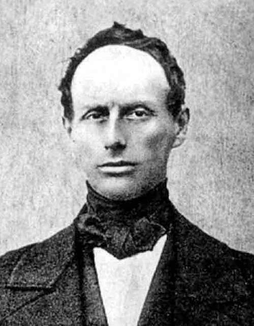
Christian DopplerLa cadence de rencontre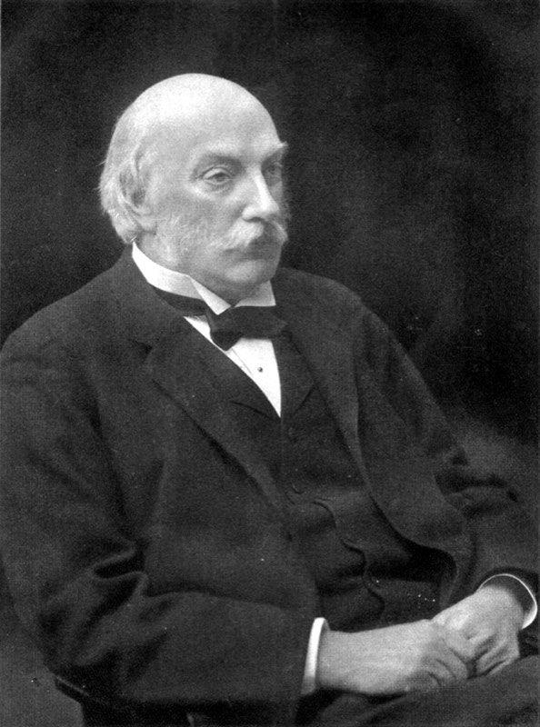
Lord RayleighLe traité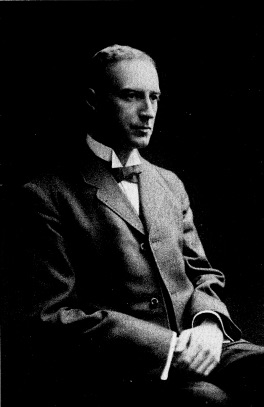
Wallace SabineChronométrer la salle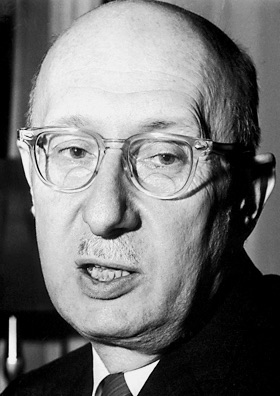
Georg von BékésyL'onde qui voyage David KempL'oreille émet Donald GriffinLe mot écholocation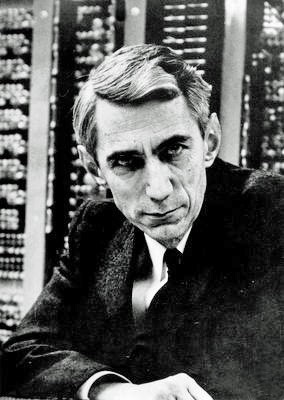
Claude ShannonDeux fois la plus haute fréquence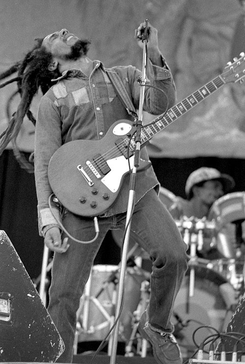
Bob MarleyL'écho devenu instrumentOuverture des portraits
Trois bascules
Mesurer, interroger l'écho, changer d'onde. Les trois portraits développés du dossier, repris ici en premier : Mersenne fait d'une hauteur un nombre ; Langevin fait d'un écho une distance ; Gurnett fait d'une fréquence de plasma une densité.
Fiche 01 · Mesurer · 8 sept. 1588 Oizé – 1er sept. 1648 Paris
Marin Mersenne
« L'horloge du son »
Religieux de l'ordre des Minimes, né à Oizé, près du Mans · couvent de la Place Royale, l'actuelle place des Vosges · œuvre : Harmonie universelle (1636–1637).
Le réseau
L'Académie des sciences n'existe pas encore : elle sera fondée en 1666. Sa cellule en tient lieu. Il écrit à Descartes, Gassendi, Fermat, Torricelli, aux Huygens. Il recopie les lettres, relance, confronte les résultats. D'où son surnom de « secrétaire de l'Europe savante ». Il défend Galilée sans adopter toute sa physique : il veut des nombres obtenus.
Ce qu'il a réellement montré
Les lois des cordes. La fréquence d'une corde varie comme l'inverse de sa longueur, comme la racine carrée de sa tension, comme l'inverse de la racine carrée de sa masse par unité de longueur. Galilée en discute ; Mersenne les écrit comme un protocole : même corde, une seule variable changée, puis on écoute.
Une fréquence absolue. Il prend une corde longue et grave, assez lente pour que l'œil compte ses allers-retours. Par ses propres lois, il en déduit la fréquence d'une corde courte accordée à l'unisson d'un tuyau d'orgue : environ 84 vibrations par seconde. C'est la première détermination d'un son audible en cycles par seconde. Avant lui, on avait des rapports.
L'octave en fréquence. L'octave est un rapport 1:2 en fréquence, pas seulement en longueur de corde. C'est le pont entre le monocorde et la physique.
La vitesse du son et l'écho. Tirs d'arme, échos sur des façades, écart entre l'éclair et le bruit : ses valeurs varient d'un protocole à l'autre, d'environ 316 à 448 m/s, faute de contrôler le vent et la température. Le geste compte plus que le nombre : la célérité est finie et mesurable. L'écho n'est plus une nymphe mais une réflexion.
Ce qu'il ne fait pas encore
Pas d'équation d'onde (d'Alembert, 1747). Pas de correction de Laplace (1816). Pas de spectre. Il reste un mécanicien du nombre.
Ce qu'on lui prête à tort
« Il mesurait en hertz. » Il mesure bien un nombre de vibrations par seconde, mais le mot n'existe pas. L'unité est adoptée par la Commission électrotechnique internationale en 1930, puis par la Conférence générale des poids et mesures en 1960. Heinrich Hertz, qui travaillait sur les ondes électromagnétiques, était mort en 1894.
« Le père de l'acoustique. » Le titre est souvent donné. Il est partagé : Sauveur donne son nom à la discipline, Chladni est souvent dit père de l'acoustique moderne.
Dans le dossier — Acte II, Portrait I →Atelier S04, la corde →
Fiche 02 · Interroger l'écho · 23 janv. 1872 Paris – 19 déc. 1946 Paris
Paul Langevin
« Compter ce qui revient »
Physicien · thèse en 1902 sous la direction de Pierre Curie · professeur au Collège de France de 1909 à 1946.
La lignée qu'il reprend
En 1793–1794, Spallanzani observe des chauves-souris qui volent sans voir, et Louis Jurine montre, en leur bouchant les oreilles, que l'audition est en jeu. En 1826, Colladon et Sturm mesurent la vitesse du son dans l'eau du lac Léman. En 1880–1881, les frères Curie découvrent la piézoélectricité et Lippmann prévoit l'effet inverse : un cristal comprimé produit des charges, et une tension le déforme. Après le naufrage du Titanic, Fessenden construit en 1914 un appareil qui détecte un iceberg par l'écho.
Ce qu'il a réellement montré
En 1915, pendant la guerre sous-marine, Langevin et Constantin Chilowsky mettent au point un émetteur d'ultrasons capacitif. En 1917, Langevin seul passe au quartz. Une lame de quartz entre deux armatures reçoit une tension alternative : elle change d'épaisseur au rythme de la fréquence et lance dans l'eau un paquet d'ultrasons. Quand l'écho revient, le même cristal fonctionne comme un micro. C'est le premier transducteur piézoélectrique à quartz, breveté en 1918, base de la technique ultérieure.
La distance se lit sur le temps. L'écho fait l'aller et le retour : on multiplie la vitesse du son dans l'eau, environ 1 500 m/s, par le temps total, puis on divise par deux. Deux millisecondes d'aller-retour correspondent à une cible à 1,5 m. Le même calcul sert pour un sous-marin, un iceberg, un foie ou un fœtus. Seuls changent la fréquence, la puissance et l'usage.
Après la guerre
L'idée passe au contrôle non destructif des métaux, puis à la médecine : premiers essais de Karl Dussik en 1942, échographie clinique avec Howry, Wild et Ian Donald dans les années 1950 à 1970. L'écho-Doppler associe le sonar de Langevin et l'effet Doppler, appliqués aux globules rouges. Langevin est aussi un homme d'engagement public : arrêté par les Allemands en octobre 1940 et révoqué par Vichy, il est rétabli en 1944. Ses cendres entrent au Panthéon en 1948.
Ce qu'on lui prête à tort
« Langevin et Chilowsky ont inventé ensemble le sonar à quartz. » Ils travaillent ensemble en 1915 sur l'émetteur capacitif. Chilowsky quitte le projet en 1916. Le transducteur à quartz est mis au point par Langevin seul, entre avril et novembre 1917.
« Un hydrophone, c'est un micro sous l'eau. » L'appareil de 1917 est un transducteur de puissance, qui émet et reçoit. Il n'a rien d'un micro de studio.
« L'inventeur de l'échographie. » L'échographie descend de son transducteur, mais la clinique moderne se construit trente ans plus tard, avec d'autres équipes.
Dans le dossier — Acte VI, Portrait II →Atelier S16, sonar à impulsion →
Fiche 03 · Changer d'onde · 11 avr. 1940 près de Fairfax (Iowa) – 13 janv. 2022 Iowa City
Donald Gurnett
« Changer d'onde »
Physicien des plasmas · Université de l'Iowa, doctorat en 1965 sous la direction de James Van Allen · titulaire de la chaire James A. Van Allen / Roy J. Carver de physique · responsable scientifique du Plasma Wave Subsystem de Voyager à partir de 1988, après Frederick Scarf.
L'école de l'Iowa
L'équipe de Van Allen construit des instruments de mesure des champs et des particules. Gurnett en hérite : une antenne longue, un récepteur, et une bande de fréquences qui tombe dans l'audible. Les whistlers terrestres, des éclairs dont l'onde électromagnétique se disperse dans la magnétosphère et arrive en sifflement descendant, s'écoutent depuis les années 1950. Gurnett emporte cette écoute plus loin, et envoie les données dans un haut-parleur parce que l'oreille repère vite un motif.
Ce qu'il a réellement montré
1979, Jupiter. Voyager 1 passe près de Io. Au casque, Gurnett reconnaît des whistlers : il y a des éclairs dans l'atmosphère de Jupiter. C'est l'une des deux preuves du survol, avec les images de la face de nuit. Il ne faut pas fabriquer de priorité entre les deux.
2012–2013, le milieu interstellaire. L'instrument mesure des oscillations d'électrons dont la fréquence dépend de la densité du plasma. Dans l'héliogaine, elles sont d'environ 300 à 400 Hz. Deux orages de plasma venus du Soleil excitent le milieu : les oscillations montent à 2,2 kHz en octobre–novembre 2012, puis à 2,6 kHz en avril–mai 2013. La fréquence varie comme la racine carrée de la densité : doubler la fréquence, c'est quadrupler la densité. Voyager 1 est donc dans un plasma plus dense, celui du milieu interstellaire. En remontant le temps, l'équipe date la traversée de l'héliopause au 25 août 2012.
Une méthode. Il écoute aussi pour diagnostiquer un instrument. Il dirige plus tard l'instrument radio et plasma de Cassini, qui étudie les émissions de Saturne de 2004 à 2017. Ses enregistrements sont archivés et ouverts au public par l'Université de l'Iowa.
Ce qu'on lui prête à tort
« Voyager a enregistré le son de l'espace. » Voyager n'a pas de micro. Ses antennes mesurent des champs électriques associés à des ondes de plasma. Leur fréquence tombe dans notre bande audible : on peut les passer dans un haut-parleur sans les transposer. Ce n'est pas un son qui aurait voyagé dans le vide.
« Il a inventé la sonification. » Les sonifications du télescope Chandra et les « chirps » de LIGO viennent d'autres équipes, pour d'autres physiques. Gurnett a rendu légitime le haut-parleur comme instrument d'astrophysique.
« Il a découvert les émissions radio de Saturne. » Elles sont connues depuis les survols Voyager. Avec Cassini, son équipe les a suivies pendant treize ans.
Dans le dossier — Acte IX, Portrait III →Atelier S54, les trois familles →
Acte I du dossier
Le lieu et le nombre
Avant la mesure, le rapport. Une corde divisée donne des intervalles ; une tradition les attribue à un homme dont on ne possède aucun écrit.
Fiche 04 · v. 570 – v. 490 av. n. è.
Pythagore
« Le rapport »
Né à Samos, fondateur d'une école à Crotone, en Grande-Grèce · aucun écrit conservé · sa doctrine est connue par des auteurs plus tardifs.
Ce qu'il a réellement montré
On ne peut pas dire exactement ce qui revient à Pythagore lui-même. La tradition de son école associe des intervalles musicaux à des rapports simples de longueurs de corde, à tension égale : 2:1 pour l'octave, 3:2 pour la quinte, 4:3 pour la quarte. La plus ancienne source écrite claire est Philolaos, au Ve siècle avant notre ère. C'est la première mathématisation documentée du son musical en Occident.
Le geste est transmis par Nicomaque de Gérase, Jamblique, puis Boèce, qui le fait passer au Moyen Âge latin. L'« harmonie des sphères » de Platon le prolonge : le cosmos lui-même serait accordé. Ce n'est pas une physique des ondes, c'est une philosophie du nombre.
Ce qu'on lui prête à tort
Les marteaux de la forge. Le récit d'un Pythagore entendant l'octave et la quinte dans les coups de marteaux de poids différents vient de Nicomaque de Gérase, au IIe siècle. Il est physiquement faux : la hauteur d'un coup sur une enclume ne suit pas ainsi la masse du marteau. Les rapports simples valent pour des longueurs de corde, et le monocorde permet de le vérifier.
« La gamme est dictée par la physique. » Les vibrations offrent des possibilités et des contraintes. Les usages et les choix culturels organisent aussi les notes.
Dans le dossier — Acte I, l'Antiquité →Atelier S27, monocorde →
Acte II du dossier · XVIIe siècle
Le siècle de la mesure
Mesurer, c'est changer une chose à la fois, compter, et permettre à quelqu'un d'autre de recommencer. Une corde, une pompe à vide, une roue dentée : le son devient un objet que l'on met à l'épreuve.
Fiche 05 · 15 févr. 1564 Pise – 8 janv. 1642 Arcetri
Galilée
« Le nombre des vibrations »
Mathématicien, physicien, astronome · fils du luthiste et théoricien Vincenzo Galilei · œuvre : Discours concernant deux sciences nouvelles (Leyde, 1638).
Ce qu'il a réellement montré
À la fin de la « Première Journée » des Discours, Galilée donne la discussion la plus nette de son époque sur la fréquence, qu'il appelle le nombre des vibrations. Il compare la corde au pendule, examine le rôle de la longueur, de la tension et de la matière de la corde, et relie la consonance à des rapports entiers de fréquences.
Le terrain a été préparé par son père. Vincenzo Galilei critique l'autorité pythagoricienne et mesure : vers 1588–1589, il constate que pour obtenir l'octave en tendant une corde, il faut quadrupler le poids, et non le doubler.
Ce qu'on lui prête à tort
« Galilée a découvert que la hauteur est une fréquence. » Giovanni Battista Benedetti affirme déjà l'égalité entre rapport de hauteurs et rapport de fréquences, dans des lettres écrites vers 1563 et imprimées en 1585. L'idée est décisive, mais mal diffusée ; Galilée lui donne sa forme la plus claire.
Fiche 06 · 25 janv. 1627 Lismore – 31 déc. 1691 Londres
Robert Boyle
« Le milieu nécessaire »
Philosophe de la nature, chimiste · né en Irlande, actif à Oxford puis Londres · œuvre : New Experiments Physico-Mechanicall, Touching the Spring of the Air (1660).
Ce qu'il a réellement montré
Expérience 27 de 1660 : une montre à sonnerie est suspendue sous la cloche d'une pompe à air. À mesure que l'on retire l'air, le tic-tac s'éteint. La démonstration établit que l'air, un milieu, est nécessaire pour que le son arrive jusqu'à l'oreille. La pompe a été conçue et construite par Robert Hooke, alors assistant de Boyle.
Ce qu'on lui prête à tort
« Sous la cloche, silence total. » Le tic-tac de la montre devient inaudible, mais une cloche frappée ne fait que s'affaiblir : l'air résiduel et le fil de suspension transmettent encore la vibration. La leçon tient, sans milieu pas de propagation, mais une expérience réelle n'atteint jamais le vide parfait.
Dans le dossier — Acte II, le XVIIe siècle →Atelier S03, cloche de Boyle →
Fiche 07 · 18 juil. 1635 Freshwater – 3 mars 1703 Londres
Robert Hooke
« La roue qui chante »
Expérimentateur, architecte · né sur l'île de Wight · responsable des expériences de la Royal Society à partir de 1662 · œuvre : Micrographia (1665).
Ce qu'il a réellement montré
La roue dentée. Une carte frotte contre une roue dentée qui tourne. Plus la roue va vite, plus le son est aigu. Hooke présente l'appareil à la Royal Society en juillet 1681. Le lien entre hauteur et fréquence devient audible et réglable, bien avant la sirène de Cagniard de La Tour (1819).
La plaque farinée. Le 8 juillet 1680, il passe un archet sur une plaque de verre saupoudrée de farine et observe des figures. Chladni systématisera le phénomène un siècle plus tard.
La pompe de Boyle. C'est lui qui la construit.
Ce qu'on lui prête à tort
Un visage. Les portraits de Hooke qui circulent sont des reconstitutions modernes ou des tableaux d'identification discutée. Aucun portrait peint de son vivant n'est identifié avec certitude.
Fiche 08 · 25 déc. 1642 Woolsthorpe – 20 mars 1727 Kensington (calendrier julien)
Isaac Newton
« Le bon cadre, la mauvaise hypothèse »
Mathématicien, physicien · Trinity College, Cambridge · œuvre : Principia (1687), livre II. Dates en calendrier grégorien : 4 janvier 1643 – 31 mars 1727.
Ce qu'il a réellement montré
Dans le livre II des Principia, Newton donne la première formule analytique de la vitesse du son : la racine carrée du rapport entre la pression de l'air et sa masse volumique. Il suppose que l'air comprimé par l'onde garde sa température.
Il publie 968 pieds par seconde en 1687, puis 979 en 1713, soit environ 295 à 298 m/s avec les données de son temps. Les mesures contemporaines donnent déjà 337 à 351 m/s : l'Accademia del Cimento (1666), Cassini (1677), Derham (1708). Newton retouche ses hypothèses pour combler l'écart. Le désaccord durera jusqu'à Laplace.
Ce qu'on lui prête à tort
« Newton s'est trompé dans son calcul. » Le calcul est juste ; c'est l'hypothèse qui est fausse. La compression dans une onde sonore est trop rapide pour échanger de la chaleur. Une bonne équation posée sur un mauvais modèle physique donne un mauvais nombre.
Dans le dossier — Ouverture, équation de Newton–Laplace →Acte II, le XVIIe siècle →
Fiche 09 · 24 mars 1653 La Flèche – 9 juil. 1716 Paris
Joseph Sauveur
« Le nom de la discipline »
Mathématicien · professeur au Collège royal (1686) · membre de l'Académie royale des sciences à partir de 1696.
Ce qu'il a réellement montré
En 1701, il forge le mot acoustique, du grec akouein, entendre. Il désigne une science du son en général, distincte de la musique, qui s'occupe du son en tant qu'agréable à l'oreille. Il étudie les harmoniques, les nœuds et les ventres des cordes vibrantes, les sons simultanés. Il hérite directement de Mersenne : le nom vient après la mesure.
Selon l'éloge de Fontenelle, il fut muet jusqu'à sept ans et resta gêné pour parler. Fontenelle écrit aussi qu'il n'avait « ni voix, ni oreille » pour la musique.
Ce qu'on lui prête à tort
« Rameau a fondé son Traité de l'harmonie sur Sauveur. » Rameau ne connaît pas les travaux de Sauveur quand il écrit le Traité (1722). Il les découvre ensuite, et s'y appuie dans la Génération harmonique (1737).
« Le fondateur de l'acoustique était sourd. » Fontenelle décrit un trouble de la parole et une absence d'oreille musicale, pas une surdité établie.
Dans le dossier — Acte II, le XVIIe siècle →Acte III, la musique →
Actes II à VI du dossier · XVIIIe – XIXe siècles
Le son mis en équations
La vitesse du son est corrigée, les modes deviennent visibles, le timbre devient un spectre, le mouvement change la fréquence. Un traité rassemble le tout en 1877.
Fiche 10 · 23 mars 1749 Beaumont-en-Auge – 5 mars 1827 Paris
Pierre-Simon de Laplace
« Le facteur manquant »
Mathématicien, astronome · œuvre : Traité de mécanique céleste (1798–1825) · mémoire « Sur la vitesse du son dans l'air et dans l'eau » (Annales de chimie et de physique, 1816).
Ce qu'il a réellement montré
Laplace referme l'écart laissé par Newton. Les compressions d'une onde sonore sont trop rapides pour que la chaleur ait le temps de s'échanger : le processus est adiabatique, pas isotherme. Il faut donc multiplier la pression par un facteur, le rapport des capacités thermiques de l'air, noté gamma, qui vaut environ 1,40.
La valeur calculée à la manière de Newton avec des données modernes est d'environ 280 m/s à 0 °C. Multipliée par la racine de 1,4, elle donne environ 331 m/s, en accord avec l'expérience.
Ce qu'on lui prête à tort
« Une correction de 1816. » L'idée est plus ancienne : Biot la publie dès 1802 en l'attribuant à Laplace. Le mémoire de 1816 donne la formule, et l'exposé complet paraît dans la Mécanique céleste dans les années 1820.
Fiche 11 · 30 nov. 1756 Wittenberg – 3 avr. 1827 Breslau (Wrocław)
Ernst Chladni
« Les modes rendus visibles »
Physicien, musicien, formé en droit · œuvres : Entdeckungen über die Theorie des Klanges (1787), Die Akustik (1802) · inventeur d'instruments (euphone, clavicylindre).
Ce qu'il a réellement montré
Il répand du sable sur une plaque et la frotte à l'archet. Le sable quitte les zones qui vibrent et s'accumule sur les lignes nodales, là où la plaque ne bouge pas. Les figures de Chladni sont la première visualisation, montrable à un public, des modes de vibration d'une plaque.
Il en fait des tournées de démonstration. Il passe par Paris en 1808, devant Napoléon et l'Institut. Le concours ouvert ensuite sur la théorie mathématique des plaques vibrantes est remporté en 1816 par Sophie Germain. En 1794, Chladni a aussi défendu l'origine extraterrestre des météorites.
Ce qu'on lui prête à tort
« L'Institut couronne Chladni. » Le prix de 1816 va à Sophie Germain, pour la théorie des plaques.
« Le son crée des formes. » Les figures montrent où la plaque ne vibre pas. À fréquence égale, une plaque de forme différente donne une figure différente. Il n'y a là aucune « cymatique créatrice ».
Dans le dossier — Acte II, XVIIIe–XIXe →Atelier S06, Chladni →
Fiche 12 · 21 mars 1768 Auxerre – 16 mai 1830 Paris
Joseph Fourier
« Une somme de sinus »
Mathématicien, physicien · membre de l'expédition d'Égypte (1798), préfet de l'Isère (1802–1815) · mémoire du 21 décembre 1807 · Théorie analytique de la chaleur (1822).
Ce qu'il a réellement montré
Un signal périodique peut s'écrire comme une somme de vibrations sinusoïdales, chacune avec son amplitude et sa phase. C'est l'outil de tout spectre et de tout spectrogramme moderne. En 1843, la « loi acoustique d'Ohm » applique l'idée à l'oreille : elle décomposerait un son complexe en composantes sinusoïdales. En 1965, la transformée de Fourier rapide rend le calcul assez rapide pour les machines.
Ce qu'on lui prête à tort
« Fourier travaillait sur le son. » Il travaillait sur la propagation de la chaleur. Et les sommes de sinus avaient déjà été discutées vers 1750 pour la corde vibrante, par Daniel Bernoulli, Euler et d'Alembert. Fourier en fait une méthode générale.
« L'octave étirée du piano viole Fourier. » Non : une corde raide a des partiels légèrement plus aigus que les multiples exacts de la fondamentale. Fourier n'est pas en cause, la corde l'est.
Dans le dossier — Ouverture, série de Fourier · atelier S17 →Atelier S28, timbre additif →
Fiche 13 · 31 août 1821 Potsdam – 8 sept. 1894 Charlottenburg
Hermann von Helmholtz
« Le timbre est un spectre »
Médecin militaire de formation, physiologiste puis physicien · inventeur de l'ophtalmoscope (1851) · œuvre : Die Lehre von den Tonempfindungen (1863).
Ce qu'il a réellement montré
Le timbre. Deux instruments qui jouent la même note diffèrent par la répartition de leurs harmoniques : le timbre est un spectre. Ses résonateurs, des sphères creuses accordées chacune sur une fréquence, permettent d'isoler à l'oreille les composantes d'un son.
La rugosité. Quand les partiels de deux notes tombent presque ensemble, ils battent et l'oreille entend une rugosité. Helmholtz en tire une explication physique de la consonance et de la dissonance, reprise au XXe siècle par Plomp et Levelt, puis Sethares.
L'audition. Il propose que des fibres de la membrane basilaire résonnent chacune à une fréquence, comme les cordes d'un piano.
Ce qu'on lui prête à tort
« L'oreille est un piano de résonateurs. » Le modèle a été partiellement confirmé et partiellement réfuté par Békésy : la cochlée analyse bien les fréquences selon la position, mais par une onde qui se propage, pas par des fibres isolées.
« La consonance est purement physique. » La rugosité n'est qu'un étage. La fondamentale virtuelle et la culture en sont d'autres.
Dans le dossier — Acte III, des intervalles aux accords →Acte IV, entendre →
Fiche 14 · 29 nov. 1803 Salzbourg – 17 mars 1853 Venise
Christian Doppler
« La cadence de rencontre »
Mathématicien, physicien · mémoire « Sur la lumière colorée des étoiles doubles », présenté à Prague le 25 mai 1842.
Ce qu'il a réellement montré
Quand une source ou un observateur se déplace, la fréquence reçue n'est plus celle émise. Ce qui compte est la cadence à laquelle l'observateur rencontre les fronts d'onde : plus rapide à l'approche, plus lente à l'éloignement. Doppler formule l'effet pour la lumière des étoiles.
L'effet sur le son est vérifié en juin 1845 par Christophorus Buys Ballot, sceptique, avec des cornistes installés sur un train entre Utrecht et Maarssen. Aujourd'hui, l'écho-Doppler mesure la vitesse du sang, et les chauves-souris rhinolophes compensent leur propre vitesse pour garder l'écho dans leur zone d'écoute la plus fine.
Ce qu'on lui prête à tort
« Doppler a expliqué la couleur des étoiles. » C'était son idée, et elle était fausse : le décalage est bien trop faible pour changer la couleur d'une étoile. Sa formule du décalage de fréquence, elle, était juste.
« Il a fait l'expérience du train. » C'est Buys Ballot.
« Une tierce mineure à 30 m/s. » À 30 m/s, la note monte d'environ 9 % pendant l'approche, trois quarts de ton environ. C'est le basculement complet, de l'approche à l'éloignement, qui fait environ 19 %, soit une tierce mineure.
Dans le dossier — Acte VI, mécanisme Doppler →Atelier S13, qui bouge ? →
Fiche 15 · 12 nov. 1842 Langford Grove (Essex) – 30 juin 1919 Terling Place (Essex)
Lord Rayleigh
« Le traité »
John William Strutt, troisième baron Rayleigh · physicien · successeur de Maxwell à la chaire Cavendish de Cambridge (1879–1884) · œuvre : The Theory of Sound (1877–1878).
Ce qu'il a réellement montré
Le traité. The Theory of Sound rassemble les cordes, les membranes, les tuyaux, la propagation et la diffraction dans un même cadre mathématique. C'est la somme fondatrice de l'acoustique moderne.
Les ondes de surface. En 1885, il décrit les ondes qui courent à la surface d'un solide : les ondes de Rayleigh, qu'on retrouve en sismologie.
Deux oreilles. En 1907, sa « théorie duplex » explique la localisation d'un son par deux indices : la différence de temps d'arrivée entre les oreilles pour les graves, la différence de niveau pour les aigus. Tout l'audio spatial en descend.
L'unité d'impédance acoustique, le rayl, porte son nom.
Ce qu'on lui prête à tort
« Un Nobel pour l'acoustique. » Son prix Nobel de physique, en 1904, récompense l'isolement de l'argon.
Dans le dossier — Acte II, XVIIIe–XIXe →Acte IV, localisation spatiale →
Actes IV, V, VII et VIII du dossier · XXe siècle
La salle, l'oreille, le vivant, le nombre
Un chronomètre dans un théâtre, des cochlées sous le microscope, une oreille qui émet, des chauves-souris qui crient hors de notre bande, un signal réduit à des échantillons. Chaque fiche garde la couleur de l'acte du dossier qui la raconte.
Fiche 16 · 13 juin 1868 Richwood (Ohio) – 10 janv. 1919 Boston
Wallace Clement Sabine
« Chronométrer la salle »
Physicien · Université Harvard · conseiller acoustique du Symphony Hall de Boston, inauguré le 15 octobre 1900.
Ce qu'il a réellement montré
En 1895, Harvard lui confie une salle de cours du Fogg Art Museum où l'on ne comprend rien. Il mesure, avec un tuyau d'orgue et un chronomètre, le temps que met le son à s'éteindre. Nuit après nuit, il déplace les coussins du Sanders Theatre pour faire varier l'absorption.
Il en tire une relation simple : le temps de réverbération croît avec le volume de la salle et diminue avec l'absorption totale de ses surfaces. À volume égal, doubler l'absorption divise la durée par deux. On mesure ce temps comme la durée d'une baisse de 60 décibels. L'unité d'absorption, la sabine, porte son nom.
Ce qu'on lui prête à tort
« Sabine a construit le Symphony Hall. » Les architectes sont McKim, Mead & White. Sabine est le conseiller acoustique. La salle reste citée parmi les meilleures du monde.
« Sa formule vaut partout. » Elle suppose un son bien diffus et une absorption modérée. Pour les salles très mates, d'autres formules, comme celle d'Eyring, prennent le relais.
Dans le dossier — Acte VII, acoustique architecturale →Atelier S24, calculateur de Sabine →
Fiche 17 · 3 juin 1899 Budapest – 13 juin 1972 Honolulu
Georg von Békésy
« L'onde qui voyage »
Physicien, ingénieur au laboratoire de recherche des Postes hongroises (1923–1946) · Harvard (1947–1966), puis Université d'Hawaï · prix Nobel de physiologie ou médecine 1961.
Ce qu'il a réellement montré
En observant des cochlées prélevées sur des cadavres, il voit une onde parcourir la membrane basilaire, de la base vers l'apex. Son maximum se place à un endroit qui dépend de la fréquence : près de la base pour les aigus, vers l'apex pour les graves. C'est la tonotopie. La cochlée fonctionne comme un analyseur de fréquences mécanique.
Il est le seul lauréat du Nobel 1961, « pour ses découvertes sur le mécanisme physique de la stimulation dans la cochlée ».
Ce qu'on lui prête à tort
« Un Nobel de physique. » Physicien de formation, il reçoit le prix de physiologie ou médecine.
« La cochlée est passive. » Une oreille morte ne montre pas l'amplification active des cellules ciliées externes. Kemp la mettra en évidence en 1978.
Dans le dossier — Acte IV, entendre →Atelier S43, la cochlée →
Fiche 18 · né en 1945
David T. Kemp
« L'oreille émet »
Physicien britannique · Institute of Laryngology and Otology, Londres, puis UCL Ear Institute · membre de la Royal Society (2004) · article fondateur : Journal of the Acoustical Society of America, vol. 64, 1978.
Ce qu'il a réellement montré
En 1978, Kemp place un petit micro dans le conduit auditif, envoie un clic, et enregistre un son qui revient de l'oreille elle-même, avec un léger retard. Ce sont les otoémissions acoustiques. Elles prouvent que la cochlée contient un amplificateur actif : les cellules ciliées externes. Leur électromotilité sera décrite dans les années 1980.
Les otoémissions provoquées sont devenues un test de dépistage auditif des nouveau-nés, pratiqué à grande échelle avec d'autres mesures automatisées. Kemp fonde en 1988 la société Otodynamics, qui commercialise l'un des premiers appareils de mesure.
Ce qu'on lui prête à tort
Rien de particulier. C'est plutôt l'idée inverse qui circule : « l'oreille est un micro ». Elle est fausse depuis 1978.
Dans le dossier — Acte IV, otoémissions →Atelier S43, la cochlée →
Fiche 19 · 3 août 1915 Southampton (New York) – 7 nov. 2003 Lexington (Massachusetts)
Donald R. Griffin
« Le mot écholocation »
Zoologiste · Université Harvard · a forgé le mot echolocation (Science, 1944) · plus tard fondateur de l'éthologie cognitive (The Question of Animal Awareness, 1976).
Ce qu'il a réellement montré
1938. Étudiant à Harvard, il apporte des chauves-souris au physicien George W. Pierce, qui dispose d'un détecteur piézoélectrique. Ils entendent pour la première fois leurs cris, à des dizaines de kilohertz, hors de notre bande audible.
1941–1942. Avec Robert Galambos, il montre qu'une chauve-souris dont on bouche la bouche ou les oreilles heurte les obstacles. La preuve est expérimentale : elle se guide à l'écho de ses propres cris.
1944. Il forge le mot echolocation. En 1960, avec Webster et Michael, il décrit les phases de la chasse d'un insecte : recherche, approche, puis une salve finale très rapide.
Il étudie aussi les salanganes, des oiseaux qui s'orientent dans des grottes par des clics entre 1 et 10 kHz, donc audibles.
Ce qu'on lui prête à tort
« Spallanzani a découvert l'écholocation. » Spallanzani observe en 1793 des chauves-souris qui volent sans voir. Louis Jurine montre en 1794 le rôle de l'oreille, et Spallanzani confirme. Le mécanisme, des ultrasons et leur écho, n'est établi qu'avec Griffin.
« L'écholocation est toujours ultrasonore. » Les salanganes et le guacharo utilisent des clics audibles.
Dans le dossier — Acte VIII, ultrasons animaux →Atelier S46, la chauve-souris →
Fiche 20 · 30 avr. 1916 Petoskey (Michigan) – 24 févr. 2001 Medford (Massachusetts)
Claude Shannon
« Deux fois la plus haute fréquence »
Mathématicien, ingénieur · Bell Labs, puis MIT · œuvres : « A Mathematical Theory of Communication » (1948), « Communication in the Presence of Noise » (Proceedings of the IRE, 1949).
Ce qu'il a réellement montré
Un microphone numérique ne mesure la pression qu'un certain nombre de fois par seconde. Shannon énonce en 1949 la condition pour ne rien perdre : si le signal ne contient aucune fréquence au-dessus d'une limite, des échantillons pris plus de deux fois plus souvent que cette limite le déterminent exactement. On le reconstruit par interpolation, sans approximation.
C'est pourquoi le CD échantillonne à 44,1 kHz pour une oreille qui s'arrête vers 20 kHz. Si la condition n'est pas respectée, les fréquences trop hautes se replient et reviennent comme de fausses notes : c'est le repliement, que le filtre placé avant l'échantillonnage empêche.
Ce qu'on lui prête à tort
« Le théorème de Shannon est de Shannon seul. » Le résultat a une histoire : E. T. Whittaker en 1915, Nyquist en 1928 pour la transmission, Kotelnikov en 1933. Shannon cite lui-même Nyquist et J. M. Whittaker. Il lui donne sa forme la plus claire et la plus diffusée.
Dans le dossier — Acte V, le son devient nombre →Atelier S19, échantillonnage →
Actes V et VII du dossier · Jamaïque, 1950–1979
Le studio comme instrument
Après ceux qui ont mesuré l'écho, ceux qui en ont fait de la musique. Les sound systems de Kingston, puis les studios de King Tubby et de Lee Perry, transforment l'écho à bande, la réverbération à ressort et le filtre en gestes de composition. Bob Marley passe par ces studios ; il n'a pas inventé le dub.
Fiche 21 · 6 févr. 1945 Nine Mile (Jamaïque) – 11 mai 1981 Miami
Bob Marley, et les ingénieurs du dub
« L'écho devenu instrument »
Chanteur, auteur, guitariste · cette fiche n'est pas une biographie : elle suit ce que la Jamaïque des années 1950 à 1970 a fait de l'écho, de la réverbération et des basses.
Des haut-parleurs dans la rue
Dans les années 1950, à Kingston, les sound systems sont des discothèques mobiles : un camion, un groupe électrogène, des platines et de grandes enceintes, qui diffusent d'abord du rhythm and blues américain. Les deux grands rivaux sont Clement « Coxsone » Dodd (Downbeat) et Duke Reid (Trojan). L'ingénieur Hedley Jones construit amplificateurs et enceintes géantes pour ces systèmes ; l'un des premiers à les utiliser, Roy Johnson, baptise le sien House of Joy.
À partir de 1967–1968, les 45 tours jamaïcains portent souvent en face B une « version » : le même morceau, sans la voix. On raconte qu'en 1968, chez Duke Reid, un acétate gravé par erreur sans la voix a fait danser la foule d'un sound system, et lancé la mode. L'anecdote est souvent répétée ; elle reste une anecdote.
La table de mixage comme instrument
Osbourne Ruddock, dit King Tubby (1941–1989), répare des radios et tient un sound system. Dans son studio du quartier de Waterhouse, il retravaille ces versions : il coupe des pistes, les fait revenir, les filtre. Son filtre passe-haut, qui retire les graves, se règle par un gros bouton rotatif à onze crans, de 70 Hz à 7,5 kHz. Il ajoute un écho produit par un magnétophone et une réverbération à ressort. C'est le dub, dont il est l'un des pionniers, avec Lee « Scratch » Perry et Errol Thompson. Sa console est aujourd'hui conservée au Museum of Pop Culture de Seattle.
Lee Perry (1936–2021) produit les Wailers, le groupe de Bob Marley, en 1970–1971. Il construit en 1973 son studio, le Black Ark, où il travaille jusqu'en 1979 avec un magnétophone quatre pistes, un écho à bande Roland Space Echo, un Echoplex et une réverbération à ressort. En 1977, Marley et Perry écrivent ensemble « Punky Reggae Party ».
Ce que font ces machines
L'écho à bande. Une tête enregistre le son sur une boucle de bande magnétique. Plus loin, une tête de lecture le relit. Le retard vaut la distance entre les deux têtes divisée par la vitesse de la bande : 2,5 cm à 38 cm/s donnent environ 66 millisecondes. Si l'on renvoie une partie du son relu vers l'entrée, les répétitions s'enchaînent en s'affaiblissant. C'est l'écho de Mersenne, une réflexion, mais fabriquée et réglable.
La réverbération à ressort. Un signal électrique fait vibrer un ressort. L'onde fait des allers-retours d'une extrémité à l'autre, et chaque retour ajoute une réflexion. Le principe vient d'un brevet de Laurens Hammond, déposé en 1939 et délivré en 1941, pour ses orgues. Sabine chronométrait la réverbération pour la maîtriser. Le dub en fait un effet qu'on dose.
Les basses. À fort volume, les basses ne passent pas seulement par l'oreille : le corps les perçoit aussi. Julian Henriques a étudié les sound systems sous cet angle, celui de vibrations entendues et ressenties. Une étude de 2022, faite pendant un vrai concert, a mesuré que des très basses fréquences, que le public ne semblait pas détecter, augmentaient d'environ 12 % la quantité de danse.
Ce qu'on lui prête à tort
« Bob Marley a inventé le dub. » Le dub vient des ingénieurs et producteurs de studio : King Tubby, Lee Perry, Errol Thompson. Marley a travaillé avec Perry, et ses disques jamaïcains suivaient l'usage de l'époque, comme la plupart des 45 tours.
Sources : Britannica (dates) · Red Bull Music Academy, Hedley Jones · RBMA, The Roots of Dub · Bibliothèque nationale de Jamaïque, King Tubby · MoPOP, console de King Tubby · bobmarley.com, Soul Rebels · Wikipédia, Dub music (anecdote de 1968) · Sound On Sound, filtre Altec du « Big Knob » · Wikipédia, Black Ark (1973–1979) · Discogs, Punky Reggae Party (crédits) · MusicRadar, Lee Perry · Roland, RE-201 · brevet US 2 230 836 (Hammond) · Strymon, principe de l'écho à bande · J. Henriques, Sonic Bodies, 2011, DOI 10.5040/9781501382895 · D. J. Cameron et al., Current Biology 32, 2022, DOI 10.1016/j.cub.2022.09.035.
Dans le dossier — Acte VII, Sabine et la réverbération →Atelier S34, le studio →Atelier S23, réverbération →